import numpy as np
import matplotlib.pyplot as plt
from scipy.stats import normBlack-Scholes-Merton Dynamic Delta Hedging
finance
python
simulation
GBM 주가 시뮬레이션부터 델타헤징, 헤징비용의 분포까지 — 블랙숄즈 델타헤징을 코드로 재현합니다.
🗺️ 오늘의 여정
이 노트북에서 우리는 1997년 노벨 경제학상을 받은 아이디어를 직접 코드로 재현합니다.
| 단계 | 내용 | 핵심 질문 |
|---|---|---|
| 1 | 주가 시뮬레이션 (GBM) | 미래 주가를 어떻게 흉내낼까? |
| 2 | 델타 헤징 | 옵션 판 사람은 어떻게 위험을 없앨까? |
| 3 | 헤징 비용의 분포 | 헤징에 드는 돈은 얼마일까? |
| 4 | Black-Scholes 공식 | 그 비용이 바로 옵션의 가격! |
| 5 | 옵션 전략 복제 | 주식만으로 복잡한 상품 만들기 |
📌 먼저 알아야 할 것: 콜옵션(Call Option)이란?
콜옵션 = 정해진 날짜(만기 \(T\))에, 정해진 가격(행사가격 \(K\))으로 주식을 살 수 있는 권리 (의무 아님!)
만기일에 주가가 \(S_T\)라면, 콜옵션을 가진 사람의 이익(payoff)은:
\[\text{콜옵션 payoff} = \max(S_T - K,\ 0)\]
- 주가가 \(K\)보다 높으면: \(K\)에 사서 \(S_T\)에 팔면 되니까 \(S_T - K\) 만큼 이득
- 주가가 \(K\)보다 낮으면: 권리를 포기하면 그만. 손해는 \(0\)
오늘의 핵심 질문: 이런 “권리”는 얼마에 사고팔아야 공정할까? 🤔
1️⃣ 주가 시뮬레이션 — 기하 브라운 운동 (GBM)
미래 주가는 아무도 모릅니다. 하지만 주가의 움직임의 패턴은 수학으로 모델링할 수 있습니다. 가장 유명한 모델이 기하 브라운 운동(Geometric Brownian Motion, GBM) 입니다.
아이디어: 수익률 = 추세 + 랜덤 충격
짧은 시간 \(\Delta t\) 동안의 주가 수익률을 이렇게 씁니다:
\[\underbrace{\frac{\Delta S}{S}}_{\text{수익률}} = \underbrace{\mu \, \Delta t}_{\text{예측 가능한 추세}} + \underbrace{\sigma \sqrt{\Delta t}\; Z}_{\text{랜덤 충격}}, \qquad Z \sim N(0, 1)\]
| 기호 | 이름 | 의미 |
|---|---|---|
| \(\mu\) | 드리프트(drift) | 평균적으로 오르는 속도 (여기선 이자율 \(r\) 사용) |
| \(\sigma\) | 변동성(volatility) | 랜덤 충격의 크기 — 지난 시간에 배운 수익률의 표준편차! |
| \(Z\) | 표준정규분포 난수 | 매일 새로 던지는 “주사위” |
| \(\sqrt{\Delta t}\) | 시간이 길수록 불확실성이 커짐 (단, \(\Delta t\)가 아니라 \(\sqrt{\Delta t}\)에 비례) |
수학자들은 \(\Delta t \to 0\)의 극한을 취해 이렇게 씁니다 (미분방정식 버전):
\[dS_t = \mu S_t \, dt + \sigma S_t \, dW_t\]
💡 겁먹지 마세요! 코드에서는 그냥 “어제 가격 × (1 + 오늘의 랜덤 수익률)” 을 하루씩 반복할 뿐입니다: \[S_{j+1} = S_j \times (1 + \underbrace{r\,\Delta t + \sigma\sqrt{\Delta t}\, Z_j}_{\text{코드의 } rv})\]
먼저 시뮬레이션에 쓸 값들을 정합니다.
S0 = 100 # 기초자산의 초기 가격
r = 0.00 # 이자율
sig = 0.2 # 주식의 변동성
M = 2000 # 시뮬레이션 횟수 (number of paths)
T = 30/365 # 만기까지 남은 시간
N = 30 # 한달이라는 시간을 30개로 나누어서 보자
dt = T / N # 지금 이 세팅에서는 1-day
rdt = r * dt
sigsdt = sig * np.sqrt(dt)몬테카를로 시뮬레이션: 평행우주 2000개 만들기
주가의 미래는 랜덤이니까, 한 번이 아니라 2000번 시뮬레이션해서 “가능한 미래들”을 모두 살펴봅니다. 이런 방법을 몬테카를로 시뮬레이션이라고 부릅니다 (카지노로 유명한 모나코의 도시 이름에서 유래 🎰).
np.random.seed(100): 난수의 시작점을 고정 → 누가 실행해도 같은 결과 (재현성)rv: 매일의 랜덤 수익률 \(r\Delta t + \sigma\sqrt{\Delta t} Z\) 를 2000경로 × 30일치 미리 생성- 이중 for문: 각 경로(\(i\))마다, 하루씩(\(j\)) \(S_{j+1} = S_j(1 + rv)\) 를 반복
🤔 생각해 보기: 그래프에서 2000개의 “가능한 미래”가 부채꼴로 퍼져 나갑니다. 시간이 지날수록 퍼짐이 커지는 이유는 무엇일까요?
np.random.seed(100)
S = np.empty([M,N+1])
rv = np.random.normal(rdt, sigsdt,[M,N])
for i in range(M):
S[i, 0] = S0
for j in range(N):
S[i, j+1] = S[i, j] * (1+rv[i,j])
for i in range(M):
plt.plot(S[i,:])
plt.ylabel("Stock Price")
plt.xlabel("Time Interval")
plt.show()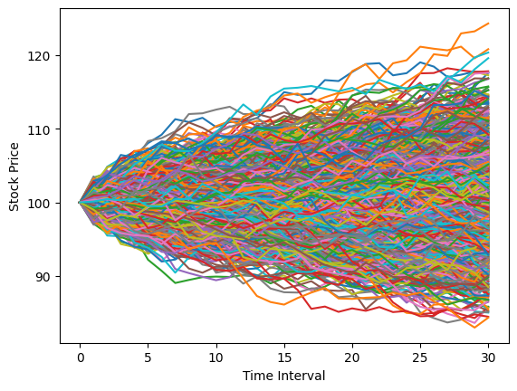
2️⃣ 델타 헤징 — 옵션 판 사람의 생존 전략
여러분이 은행이고, 누군가에게 콜옵션을 팔았다고 합시다. 만기에 주가가 폭등하면 큰 손해입니다. 어떻게 위험을 없앨까요?
아이디어: 주가가 오르면 나도 손해를 보니까, 주식을 미리 조금 사두면 그 손해를 상쇄할 수 있다!
그럼 주식을 몇 주 사야 할까요? 그 답이 바로 델타(\(\Delta\)) 입니다.
\[\Delta = N(d_1), \qquad d_1 = \frac{\ln(S/K) + (r + \tfrac{1}{2}\sigma^2)(T-t)}{\sigma\sqrt{T-t}}\]
- \(N(\cdot)\) 은 표준정규분포의 누적확률 함수 → 델타는 항상 0과 1 사이!
- 직관: 델타 ≈ “이 옵션이 행사될 것 같은 정도”
- 주가 ≫ 행사가격: 행사가 거의 확실 → \(\Delta \approx 1\) (주식 1주를 통째로 들고 있어야 함)
- 주가 ≪ 행사가격: 행사 가능성 희박 → \(\Delta \approx 0\) (주식이 필요 없음)
그런데 주가는 매일 변하고, 델타도 매일 변합니다. 그래서 매일 델타를 다시 계산해서 주식을 사고팔아 수량을 맞춥니다. 이것이 동적 델타 헤징(dynamic delta hedging) 입니다.
헤징에 드는 누적 비용
매일 “새 델타 − 어제 델타”만큼 주식을 추가로 사면(음수면 팜), 총비용은 아래처럼 쌓입니다:
\[ (\Delta_0 - 0)S_1 + (\Delta_1 - \Delta_0)S_1 + (\Delta_2 - \Delta_1)S_2 + \cdots + (\Delta_{T-1} - \Delta_{T-2})S_{T-1} + (\Delta_T - \Delta_{T-1})S_T \]
한 경로에서 직접 따라가 보기
2000개 경로 중 하나(m = 2)를 골라 30일간의 헤징 과정을 하루씩 출력해 봅니다.
출력되는 네 개의 숫자: 오늘 주가 · 오늘 델타 · 오늘 추가 매수량(델타 변화) · 누적 비용
🤔 생각해 보기: 주가가 오르는 날 델타는 어떻게 변하나요? “오르면 더 사고, 내리면 판다”는 패턴이 보이나요?
m = 2
K = 100 # call option의 strike price
hedge = 0 # 이전의 delta 값 / 초기 delta = 0 (시작할 때 시점에는 주식을 하나도 안가지고 있다)
cost = 0 # 초기 cost = 0
for j in range(N):
d1 = (np.log(S[m,j]/K)+(r+0.5*sig**2)*(T-j*dt))/(sig*np.sqrt(T-j*dt))
delta = norm.cdf(d1) # call option의 delta (N(d1))
cost = cost + (delta - hedge) * S[m,j] # cummulative cost
print(S[m,j], delta, delta-hedge, cost)
hedge = delta100.0 0.5114357531402248 0.5114357531402248 51.143575314022485
99.07689125608613 0.4457845248869264 -0.06565122825329844 44.63905571154194
99.09622328188574 0.4458319533501736 4.7428463247234376e-05 44.643755693125804
99.34296012412267 0.46255880839794566 0.01672685504777205 46.305450987138606
99.35705020332723 0.4624952386181039 -6.35697798417878e-05 46.299134881331454
97.65590804354834 0.33468991606814263 -0.12780532254996124 33.81819005491641
96.58840312884242 0.25746037968492685 -0.07722953638321578 26.35871246128076
97.20826735055189 0.294987255413672 0.037526875728745135 30.006635029951553
97.95744645222175 0.3461476106246084 0.051160355210936426 35.018172786003504
99.01051887469114 0.4272810828430562 0.0811334722184478 43.05123996845736
97.5260683681879 0.3044409335950963 -0.12284014924795994 31.071123174542414
95.64630801048182 0.17037492065799853 -0.13406601293709774 18.248204007423524
96.01286665624016 0.18568765993994163 0.0153127392819431 19.718424002242497
95.67939459599293 0.15824594656555108 -0.027441713374390553 17.092817479904046
94.98906168334408 0.11376245502405424 -0.044483491541496833 12.867372357978288
97.01225701992496 0.23334659443629902 0.11958413941224477 24.468499626145515
96.45296758690525 0.18341519335533935 -0.04993140108095967 19.652467816114946
97.21071218130174 0.23250598315091697 0.04909078979557763 24.42461845368563
95.88065372022157 0.12675520348008912 -0.10575077967082785 14.285164567423536
96.46338943473866 0.1539361012810112 0.027180897800922088 16.907126097179713
95.34801449802724 0.07744952680099734 -0.07648657448001386 9.614283084754911
96.03685830165074 0.10170204232093571 0.024252515519938372 11.943418481201817
96.72742994860229 0.133729208607901 0.03202716628696528 15.041323964676488
95.14101936446633 0.03716788838817013 -0.09656132021973086 5.85438152779264
96.04235703846558 0.05915029253117194 0.02198240414300181 7.9656234350586645
96.82539858751115 0.08589421690612664 0.0267439243749547 10.555114572457908
97.25946167679153 0.09396122020190656 0.008067003295779918 11.339706970350367
97.37031062729685 0.07205542442203396 -0.021905795779872603 9.206732830726043
97.39914067362281 0.03814492295974803 -0.03391050146228593 5.903879128487764
96.80895781998274 0.0009917230777914624 -0.03715319988195657 2.3071165682380435만기일의 정산
만기가 되면 옵션 판 사람의 상황은 둘 중 하나입니다:
| 만기 상황 | 옵션 산 사람 | 옵션 판 사람(나) |
|---|---|---|
| \(S_T > K\) (행사됨) | 권리 행사! \(K\)를 내고 주식 받아감 | 들고 있던 주식(≈1주)을 넘기고 \(K\)를 받음 |
| \(S_T < K\) (행사 안 됨) | 권리 포기 | 들고 있던 주식(≈0주)을 시장에 되팖 |
이 마지막 정산까지 반영한 최종 비용을 계산합니다. (이번엔 부호를 바꿔 (hedge-delta)로 쓰고 마지막에 받는 돈을 더하는 방식 — 결과는 같습니다)
M = 64
K = 100
hedge = 0
cost = 0
for j in range(N):
d1 = (np.log(S[M,j]/K)+(r+0.5*sig**2)*(T-j*dt))/(sig*np.sqrt(T-j*dt))
delta = norm.cdf(d1)
cost = cost + (hedge-delta) * S[M,j]
hedge = delta
#print(S[M,j], delta, cost)
if S[M,N] > K: # 만기시점의 기초자산의 가격이 행사가격보다 크면 행사가격만큼 받고 기초자산을 상대방에게 넘기겠죠?
delta = 1 # 만기시점에 그 주식을 가지고 있어야하기 때문에 delta가 1에 가까움
cost = cost + K
else: # 반대로 행사가격보다 작을 때
delta = 0 # 델타는 틀림없이 0에 가까움
cost = cost + S[M,N] * hedge
print(S[M,N], 0, cost)98.61327867199607 0 -2.36351478219393133️⃣ 헤징 비용의 분포 — 히스토그램으로 보기
한 경로의 비용은 우연에 좌우됩니다. 그래서 여러 경로에서 최종 손익(P&L)을 모아 히스토그램을 그려봅니다. (지난 시간에 배운 그 히스토그램입니다! 📊)
주목할 것 두 가지:
- 분포의 중심: 경로가 달라도 헤징 비용은 대체로 비슷한 값 근처에 모입니다. → 이 값이 곧 “옵션을 만들어 파는 원가”!
- 분포의 퍼짐: 하루에 한 번만 리밸런싱하기 때문에 생기는 오차입니다. 더 자주(N을 크게) 리밸런싱하면 퍼짐이 줄어듭니다.
경로 수 M을 100 → 500 → 1000 → 2000으로 늘려가며 분포가 어떻게 안정되는지 관찰해 보세요.
M = 100
a = []
K = 100
for i in range(M):
cost = 0
hedge = 0
for j in range(N):
d1 = (np.log(S[i,j]/K)+(r+0.5*sig**2)*(T-j*dt))/(sig*np.sqrt(T-j*dt))
delta = norm.cdf(d1)
cost = cost + (hedge-delta) * S[i,j]
hedge = delta
if S[i,N] > K:
cost = cost + (hedge-1)*S[i,N] + K
#print(hedge)
else:
cost = cost + (hedge-0)*S[i,N]
#print(hedge)
a.append(cost)
plt.hist(a, bins=20, alpha=0.7)
plt.xlabel('P&L')
plt.ylabel('Freq.')
plt.show()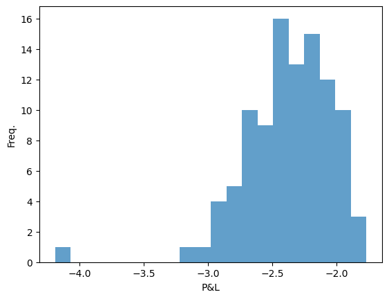
M = 500
a = []
K = 100
for i in range(M):
cost = 0
hedge = 0
for j in range(N):
d1 = (np.log(S[i,j]/K)+(r+0.5*sig**2)*(T-j*dt))/(sig*np.sqrt(T-j*dt))
delta = norm.cdf(d1)
cost = cost + (hedge-delta) * S[i,j]
hedge = delta
if S[i,N] > K:
cost = cost + (hedge-1)*S[i,N] + K
#print(hedge)
else:
cost = cost + (hedge-0)*S[i,N]
#print(hedge)
a.append(cost)
plt.hist(a, bins=20, alpha=0.7)
plt.xlabel('P&L')
plt.ylabel('Freq.')
# plt.title('Stock Price Sample Paths')
plt.show()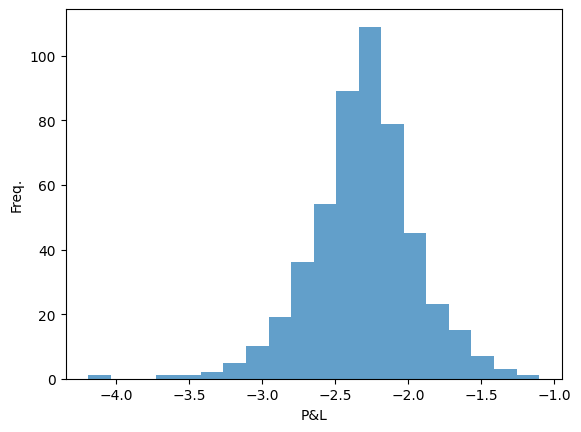
M = 1000
a = []
K = 100
for i in range(M):
cost = 0
hedge = 0
for j in range(N):
d1 = (np.log(S[i,j]/K)+(r+0.5*sig**2)*(T-j*dt))/(sig*np.sqrt(T-j*dt))
delta = norm.cdf(d1)
cost = cost + (hedge-delta) * S[i,j]
hedge = delta
if S[i,N] > K:
cost = cost + (hedge-1)*S[i,N] + K
#print(hedge)
else:
cost = cost + (hedge-0)*S[i,N]
#print(hedge)
a.append(cost)
plt.hist(a, bins=20, alpha=0.7)
plt.xlabel('P&L')
plt.ylabel('Freq.')
# plt.title('Stock Price Sample Paths')
plt.show()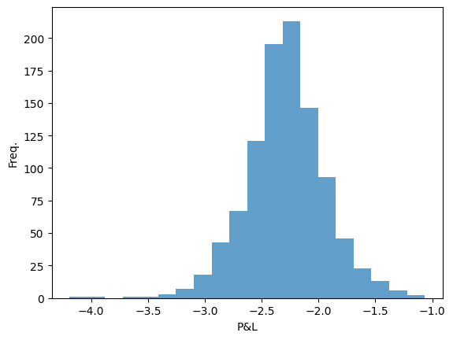
M = 2000
a = []
K = 100
for i in range(M):
cost = 0
hedge = 0
for j in range(N):
d1 = (np.log(S[i,j]/K)+(r+0.5*sig**2)*(T-j*dt))/(sig*np.sqrt(T-j*dt))
delta = norm.cdf(d1)
cost = cost + (hedge-delta) * S[i,j]
hedge = delta
if S[i,N] > K:
cost = cost + (hedge-1)*S[i,N] + K
#print(hedge)
else:
cost = cost + (hedge-0)*S[i,N]
#print(hedge)
a.append(cost)
plt.hist(a, bins=20, alpha=0.7)
plt.xlabel('P&L')
plt.ylabel('Freq.')
# plt.title('Stock Price Sample Paths')
plt.show()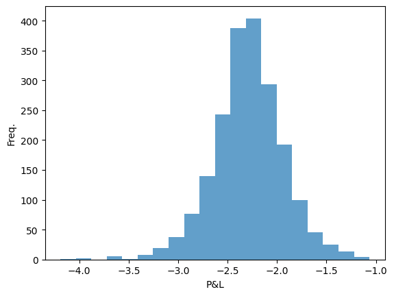
4️⃣ 드디어 — Black-Scholes 공식
방금 시뮬레이션으로 구한 “헤징 원가”를, Black과 Scholes는 1973년에 수학 공식 하나로 구해냈습니다:
\[\boxed{\; C_0 = S_0 \, N(d_1) - K e^{-rT} N(d_2) \;}\]
\[d_1 = \frac{\ln(S_0/K) + (r + \tfrac{1}{2}\sigma^2)T}{\sigma\sqrt{T}}, \qquad d_2 = d_1 - \sigma\sqrt{T}\]
읽는 법:
| 항 | 직관적 의미 |
|---|---|
| \(S_0 N(d_1)\) | 만기에 받게 될 주식의 가치 (지금 기준) |
| \(K e^{-rT} N(d_2)\) | 만기에 지불할 행사가격의 가치 (지금 기준) |
| \(N(d_2)\) | (위험중립 세계에서) 옵션이 행사될 확률 |
| \(e^{-rT}\) | 미래 돈을 현재 가치로 할인하는 항 |
💡 핵심 통찰: 옵션의 공정가격 = 완벽하게 델타 헤징했을 때 드는 비용. 팔면서 이 가격을 받아 헤징하면, 주가가 어디로 가든 손익이 (거의) 0이 되기 때문입니다.
아래 셀에서 공식으로 계산한 값이, 위 히스토그램의 중심과 거의 일치하는지 확인해 보세요!
d1 = (np.log(S0/K)+(r+0.5*sig**2)*(T))/(sig*np.sqrt(T))
d2 = (np.log(S0/K)+(r-0.5*sig**2)*(T))/(sig*np.sqrt(T))
# BS fomula 공식에 따라 계산
S0 * norm.cdf(d1) - K * np.exp(-r*T) * norm.cdf(d2)np.float64(2.2871506280449694)헤징 포트폴리오는 옵션을 “복제”한다
이번엔 만기 정산 없이, 만기 주가(\(x\)축) vs 헤징 포트폴리오의 가치(\(y\)축) 를 점으로 찍어봅니다.
주식만 사고팔았을 뿐인데, 그래프가 콜옵션의 payoff \(\max(S_T - K, 0)\) 모양(하키스틱 🏒)을 그대로 그려낸다면 — 옵션 없이 옵션을 만들어낸 것입니다!
a = []
K = 100
for i in range(M):
cost = 0
hedge = 0
for j in range(N):
d1 = (np.log(S[i,j]/K)+(r+0.5*sig**2)*(T-j*dt))/(sig*np.sqrt(T-j*dt))
delta = norm.cdf(d1)
cost = cost + (hedge-delta) * S[i,j]
hedge = delta
cost = cost + hedge*S[i,N]
a.append(cost)
plt.plot(S[:,-1], a, marker=".", linestyle='none')
plt.xlabel("Stock Price at Maturity")
plt.ylabel("P&L")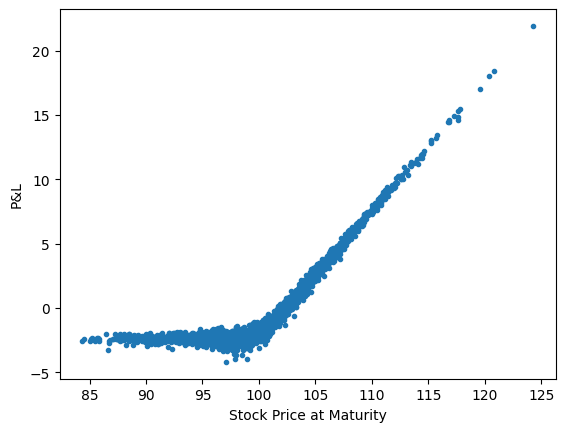
N을 점점 크게 할수록 call option의 payoff에 정확하게 근사함.
위와 같은 delta-hedging 과정을 통해 시장에 call option이 없어도 call option을 하나 가진거와 같음. (주식만 가지고 call option의 payoff를 만들 수 있음. = 복제 포트폴리오)
Replication of Options Strategies
- reference: https://www.investopedia.com/trading/options-strategies/
(참고) Long Call Butterfly Spread
행사가격이 다른 콜옵션 3개를 조합하면 재미있는 모양의 payoff를 만들 수 있습니다:
\[\text{Butterfly payoff} = \max(S_T - K_1, 0) - 2\max(S_T - K_2, 0) + \max(S_T - K_3, 0)\]
(\(K_1 < K_2 < K_3\): 낮은 행사가 콜 1개 매수 + 중간 행사가 콜 2개 매도 + 높은 행사가 콜 1개 매수)
이 전략의 델타는 각 옵션 델타의 같은 조합: \(\Delta = \Delta_1 - 2\Delta_2 + \Delta_3\). 이 델타로 헤징하면 나비(🦋) 모양 payoff도 주식만으로 복제됩니다. 주가가 \(K_2\) 근처에 머물 것 같을 때 쓰는 전략입니다.
a = []
K_1 = 90
K_2 = 100
K_3 = 110
for i in range(M):
cost = 0
hedge = 0
for j in range(N):
d1_1 = (np.log(S[i,j]/K_1)+(r+0.5*sig**2)*(T-j*dt))/(sig*np.sqrt(T-j*dt))
delta_1 = norm.cdf(d1_1)
d1_2 = (np.log(S[i,j]/K_2)+(r+0.5*sig**2)*(T-j*dt))/(sig*np.sqrt(T-j*dt))
delta_2 = norm.cdf(d1_2)
d1_3 = (np.log(S[i,j]/K_3)+(r+0.5*sig**2)*(T-j*dt))/(sig*np.sqrt(T-j*dt))
delta_3 = norm.cdf(d1_3)
delta = delta_1 - 2*delta_2 + delta_3
cost = cost + (hedge-delta) * S[i,j]
hedge = delta
cost = cost + hedge*S[i,N]
a.append(cost)
plt.plot(S[:,-1], a, marker=".", linestyle='none')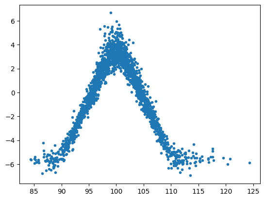
a = []
K_1 = 95
K_2 = 100
K_3 = 110
for i in range(M):
cost = 0
hedge = 0
for j in range(N):
d1_1 = (np.log(S[i,j]/K_1)+(r+0.5*sig**2)*(T-j*dt))/(sig*np.sqrt(T-j*dt))
delta_1 = norm.cdf(d1_1)
d1_2 = (np.log(S[i,j]/K_2)+(r+0.5*sig**2)*(T-j*dt))/(sig*np.sqrt(T-j*dt))
delta_2 = norm.cdf(d1_2)
d1_3 = (np.log(S[i,j]/K_3)+(r+0.5*sig**2)*(T-j*dt))/(sig*np.sqrt(T-j*dt))
delta_3 = norm.cdf(d1_3)
delta = delta_1 - 2*delta_2 + delta_3
cost = cost + (hedge-delta) * S[i,j]
hedge = delta
cost = cost + hedge * S[i,N] + (- np.maximum(S[i,N]-K_1,0) + 2* np.maximum(S[i,N]-K_2,0) - np.maximum(S[i,N]-K_3,0))
a.append(cost)
plt.hist(a, bins=20)
plt.show()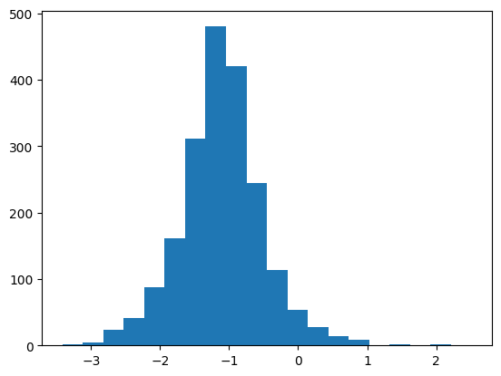
🔁 2부: 처음부터 다시, 깔끔하게
지금까지의 과정을 정리된 코드로 다시 한 번 봅니다. 흐름은 같습니다: GBM 시뮬레이션 → BS 공식을 함수로 정의 → 델타 헤징으로 복제 확인
r = 0.00
sig = 0.2 # volatility
M = 1000 # number of paths
T = 30/365 # maturity
N = 30
dt = T/N # time interval
rdt = r*dt
sigsdt = sig * np.sqrt(dt)
S0 = 100 # initial stock price
K = 100 # strike priceGBM Simulation
np.random.seed(1234)
S = np.empty([M,N+1])
rv = np.random.normal(r*dt,sigsdt,[M,N])
for i in range(M):
S[i,0] = S0
for j in range(N):
S[i,j+1] = S[i,j] * (1+rv[i,j])
for i in range(M):
plt.plot(S[i,:])
plt.show()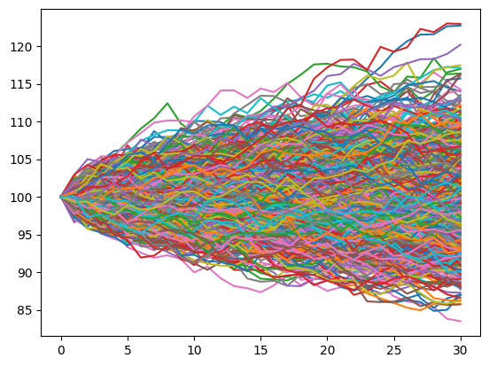
S.shape(1000, 31)\[ (\Delta_0 - 0)S_0 + (\Delta_1 - \Delta_0)S_1 + (\Delta_2 - \Delta_1)S_2 + \cdots + (\Delta_{T-1} - \Delta_{T-2})S_{T-1} + (\Delta_T - \Delta_{T-1})S_T \]
Black-Scholes 공식을 함수로
콜옵션과 함께 풋옵션(정해진 가격에 팔 권리) 가격 공식도 함수로 만들어 둡니다:
\[C_0 = S_0 N(d_1) - K e^{-rT} N(d_2) \qquad \text{(콜)}\]
\[P_0 = K e^{-rT} N(-d_2) - S_0 N(-d_1) \qquad \text{(풋)}\]
💡 콜과 풋은 대칭 관계입니다. 두 식을 빼면 풋-콜 패리티 \(C_0 - P_0 = S_0 - Ke^{-rT}\) 가 나옵니다.
# BS formula
# call option
def bscall(S, K, T, r, sig):
d1 = (np.log(S/K)+(r+0.5*sig**2)*T)/(sig*np.sqrt(T))
d2 = (np.log(S/K)+(r-0.5*sig**2)*T)/(sig*np.sqrt(T))
return S*norm.cdf(d1)-K*np.exp(-r*T)*norm.cdf(d2)
# put option
def bsput(S, K, T, r, sig):
d1 = (np.log(S/K)+(r+0.5*sig**2)*T)/(sig*np.sqrt(T))
d2 = (np.log(S/K)+(r-0.5*sig**2)*T)/(sig*np.sqrt(T))
return K*np.exp(-r*T)*norm.cdf(-d2)-S*norm.cdf(-d1)bscall(S0, K, T, r, sig)np.float64(2.2871506280449694)최종 확인: 헤징 손익 = 0?
만기 payoff까지 정산한 뒤 옵션 판매가격(BS 가격) 을 빼면, 완벽한 헤징이라면 손익이 0 근처에 모여야 합니다. \(x\)축(만기 주가) 어디에서든 \(y\)(손익)가 0 근처에 붙어 있는지 확인해 보세요.
a = []
for i in range(M):
cost = 0
hedge = 0
for j in range(N):
d1 = (np.log(S[i,j]/K)+(r+0.5*sig**2)*(T-j*dt))/(sig*np.sqrt(T-j*dt))
delta = norm.cdf(d1)
cost = cost + (delta-hedge) * S[i,j] # 위에 있는 식 그대로
hedge = delta
# cost = cost - hedge * S[i,N] # 마지막 항
cost = cost - hedge * S[i,N] + np.maximum(S[i,N]-K, 0)
#cost = cost - hedge * S[i,N] + np.maximum(S[i,N]-K, 0) - bscall(S0, K, T, r, sig)
a.append(cost)
plt.plot(S[:,-1], a, marker=".", linestyle='none')
plt.show()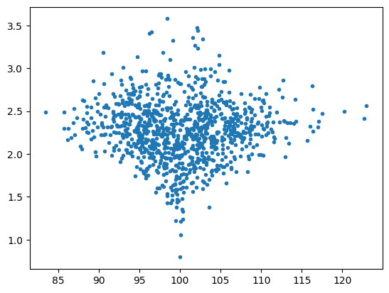
기존 식에서 코드를 간결하게 만들기 위해.. 바꿔준 식. 결국 결과는 같음!
\[ (\Delta_0 - 0)S_0 + (\Delta_1 - \Delta_0)S_1 + (\Delta_2 - \Delta_1)S_2 + \cdots + (\Delta_{T-1} - \Delta_{T-2})S_{T-1} + (\Delta_T - \Delta_{T-1})S_T \\ \]
\[ \Delta_0 (S_0-S_1) + \Delta_1 (S_1-S_2) + \Delta_2 (S_2-S_3) + \cdots + \Delta_{T-1} (S_{T-1}-S_T) + \Delta_T S_T \]
a = []
for i in range(M):
cost = 0
price = S[i,0]
for j in range(N):
d1 = (np.log(S[i,j]/K)+(r+0.5*sig**2)*(T-j*dt))/(sig*np.sqrt(T-j*dt))
delta = norm.cdf(d1) # call option delta
cost = cost + delta*(price - S[i, j+1])
price = S[i,j+1]
cost = cost + np.maximum(S[i,N]-K, 0) - bscall(S0, K, T, r, sig)
a.append(cost)
plt.plot(S[:, -1], a, marker=".", linestyle='none')
plt.show()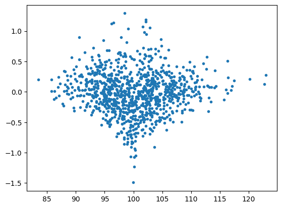